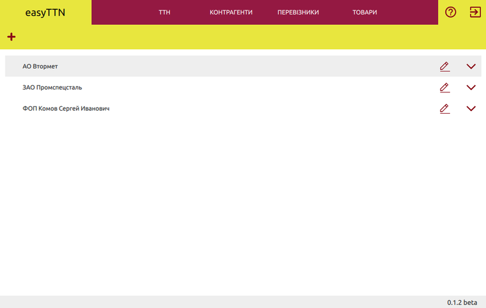
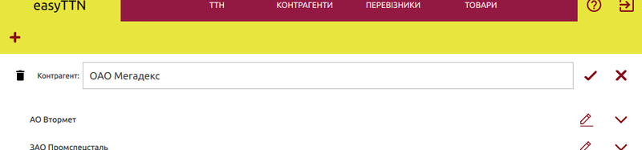
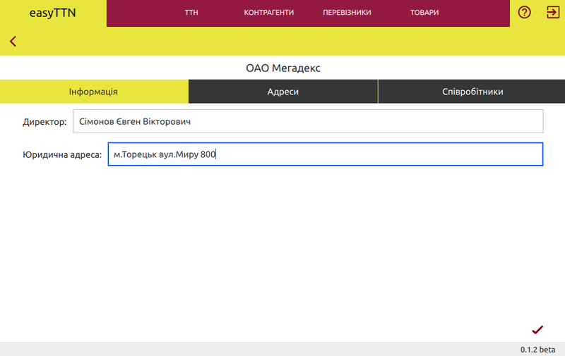
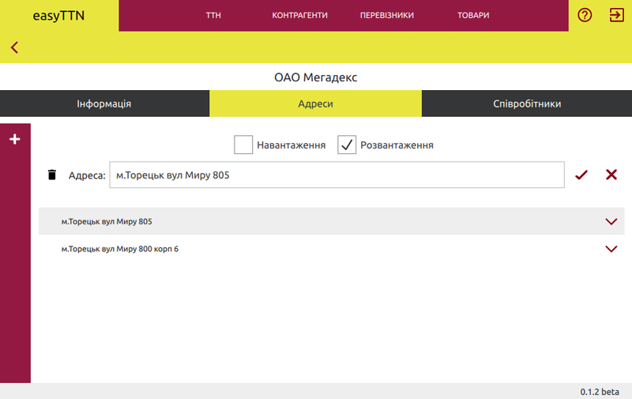
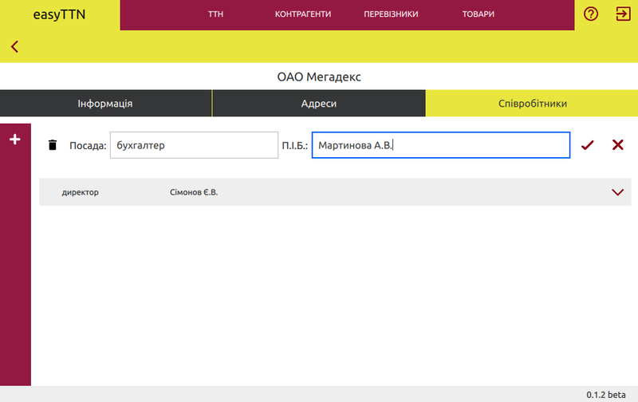

Контрагенты

Справочник "Контрагенты" содержит информацию о компаниях, которые участвуют в процессе перевозки в качестве отправителя, получателя или заказчика. Для заполнения ттн необходимы данные о сотрудниках (ответственных лицах) компании и ее адресах - юридическом, а также пунктов погрузки и разгрузки.
Добавить
Чтобы добавить компанию нажмите  на верхней панели.
на верхней панели.

В появившемся окне впишите ее наименование и подтвердите нажатием
 . После того, как компания будет добавлена,
заполните карточку информацией о ней.
. После того, как компания будет добавлена,
заполните карточку информацией о ней.
Карточка контрагента
Карточка разделена на три части: общая информация, адреса и сотрудники. Для корректного составления товарно-транспортной накладной у вас должен быть полностью заполнен раздел общей информации и присутствовать хотя бы по одной записи в разделе адресов и сотрудников.

Адреса
Чтобы добавить пункт погрузки или разгрузки нажмите  на боковой панели.
Если у компании есть адрес, который при заполнении ттн может выступать в качестве и пункта разгрузки,
и пункта погрузки не нужно вносить его дважды разными позициями. В этом
случае этому пункту достаточно поставить обе галочки принадлежности.
на боковой панели.
Если у компании есть адрес, который при заполнении ттн может выступать в качестве и пункта разгрузки,
и пункта погрузки не нужно вносить его дважды разными позициями. В этом
случае этому пункту достаточно поставить обе галочки принадлежности.

Для корректировки записей об адресах, выберите из таблицы интересующий пункт и нажмите
 . После корректировки адреса не забудьте подтвердить внесенные изменения, нажав кнопку
. После корректировки адреса не забудьте подтвердить внесенные изменения, нажав кнопку
 . Удалить позицию можно из формы
редактирования путем нажатия
. Удалить позицию можно из формы
редактирования путем нажатия  .
.
Удалить адрес возможно только в том случае, если он не был ранее использован при заполнении товарно-транспортной накладной.
Сотрудники
Кроме адресов для заполнения товарно-транспортной накладной нужна информация о лицах, которые отвечают или принимают решение об отпуске или принятии грузов. Рекомендуем внести данные директора и бухгалтера.
